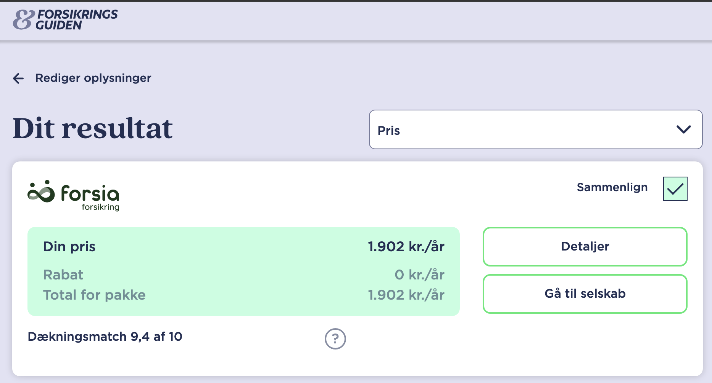
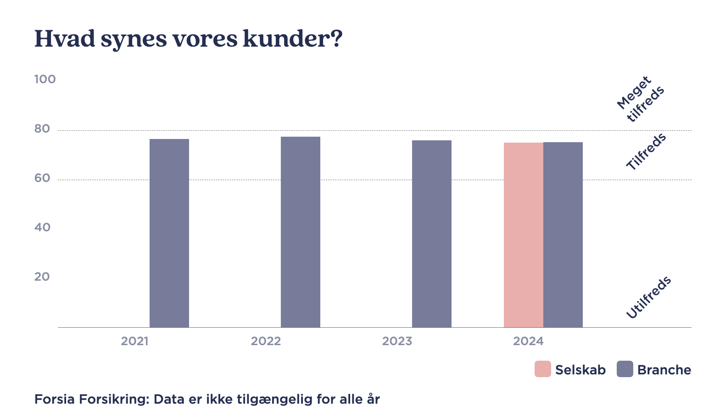
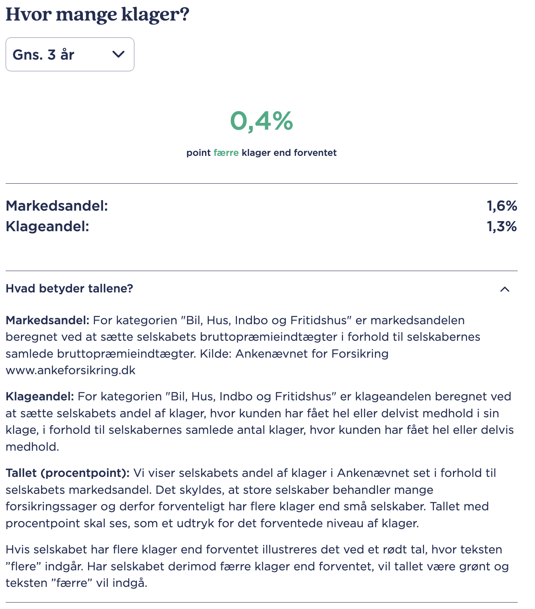
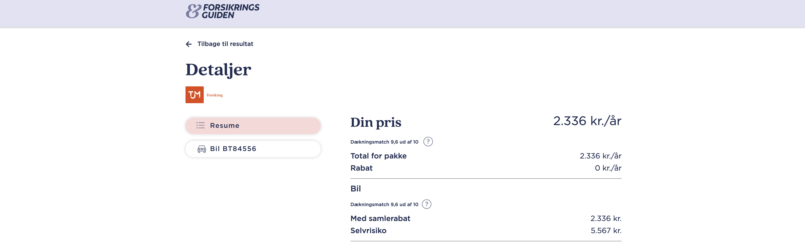
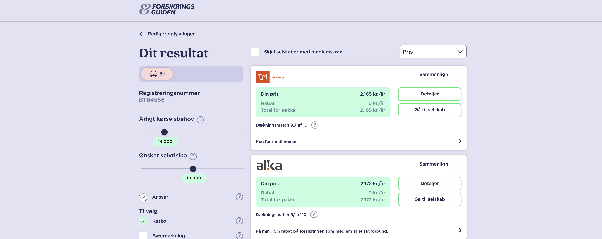
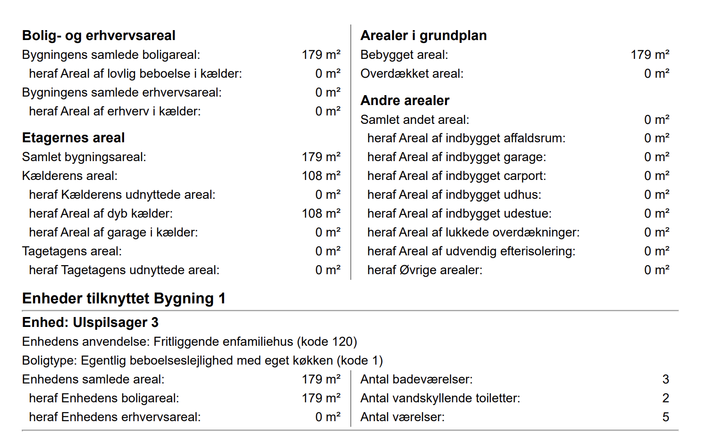
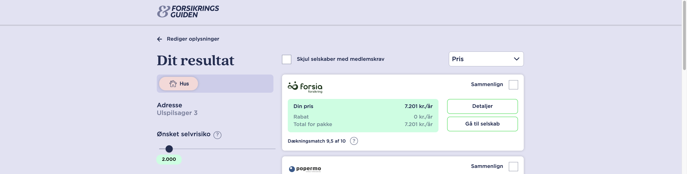
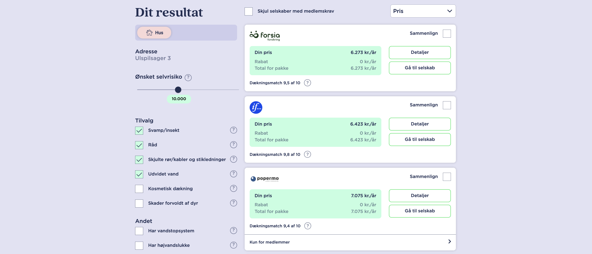

-
Aktivitet Temaprojekt 3 uge 1
Finansiel rådgivning - Privat
Løsningsforslag
Forsikring
Formål:
Rådgivning i forbindelse med Forsikringer.
Anslået tidsforbrug:
5 timer
Forudsætning:Materialerne er beskrevet i introen til ugen, herudover kan følgende links være nyttige:
Skatteskabelon
Excel SkatteskabelonenLinks til relevante sider
Pensionsinfo.dk
Forsikringsguiden.dk
Forsikring bedst billigst taenk.dk
Opgave:
Besvar spørgsmålene, upload i Workshop inden deadline.
Feedback:
Du kan se undervisers løsningsforslag og sammenligne med din egen opgave, når du har afleveret din besvarelse og markeret afleveringen som gennemført.
Bemærk Workshop opgaven er ikke obligatorisk, men det anbefales absolut at løse denne.
Oplysninger
Thomas og Birgitta er hhv. 56 år og 55 år. De er gift og har 2 børn, 16 år og 13 år.
Familien har en lillebitte hund, det er en blanding af en bomuldshund og en ukendt far (naboen havde en Yorkshire-terrier der var meget intereseret i moren), men hunden er glad og tilfreds trods den ukendte fader.
Thomas arbejder som lærer og Birgitta er sosu-assistent, de er begge i fagforening.
De bor i hus i Dragør, huset ligger på Ulspilsager 3 og er bygget i 1972.
De har 1 ældre Fiesta med registreringsnummer BT54556, de har købt bilen brugt, men de har haft bil i 20 år.
De kører cirka 14.000 km om året.
De har ikke haft anmeldt nogen skader på deres bil, den sidste skade de havde var ved et indbrud i huset i 2015, hvor de lige havde overtaget huset.
Det havde ved indbruddet ikke nogen møbler i huset, men de fik stjålet ovn, kogeplade og vinkøleskab.
Spørgsmål
-
Hvad er den billigte indboforsikring for Thomas og Birgitta ifølge forsikringsguiden.dk?
Løsningsforslag:
Den billigste indboforsikring er forsia-forsikring hvor præmien er 1.902,- kr. om året, her er en selvbetaling på 2.000 kr.

-
Forklar kort hvad en indboforsikring dækker?
Løsningsforslag:
En indboforsikring dækker primært følgende:
Indbogenstande
Dækker skader på de ting, du ville tage med dig ved en flytning.
Indbo opdeles i:- Almindeligt privat indbo (tøj, møbler, bøger)
- Særligt privat indbo (TV, radio, computere, musikinstrumenter)
- Særlige private værdigenstande (smykker, frimærker - ofte med begrænsning)
- Penge og værdipapirer (begrænset beløb)
- Husdyr (op til et vist beløb)
- Værktøj til lønmodtagere (op til et vist beløb)
Dækker hvor?
I din helårsbolig og under rejser (op til en vis varighed).
Dækker mod
- Brand
- Tyveri
- Indbrudstyveri
- Simpel tyveri
- Røveri, ran og overfald
- Hærværk
- Vandskade
Ansvarsforsikring
Dækker, hvis du er skyld i skader på andre eller deres ting.
Retshjælpsforsikring
Dækker omkostninger i private retstvister.
Rejsedækning
Dækker genstande under rejse (op til en andel af forsikringssummen).
ID-Tyveri
Hjælp til at forebygge, opdage og begrænse identitetstyveri (tilbydes af visse selskaber).
Tilvalgsdækninger
F.eks. elektronikdækning og pludselig skade.
Vigtigt:
Der er undtagelser og begrænsninger. Dækningens omfang varierer mellem selskaber.
-
Er Forsia et godt forsikringsselskab ifølge forsikringsguiden.dk?
Løsningsforslag:
Forsia er et selskab med kundetilfredshed på niveau med branchen ifølge forsikringsguiden.dk:

-
Er der mange klager over Forsia ifølge forsikringsguiden.dk?
Løsningsforslag:
Nej Forsia har en klageandel, der er lavere end deres markedsandel, så det er fint:

-
Er der nogen forsikringer det er lovpligtigt for familien at tegne?
Løsningsforslag:
Ja, der er nogen forsikringer det er lovpligtigt for familien at tegne.
Lovpligtige forsikringer:
Ansvarsforsikring til bil:
Det er lovpligtigt at have en ansvarsforsikring til sin bil. Denne forsikring dækker skader, du forvolder på andre personer eller deres ejendom i tilfælde af en ulykke.
Kaskoforsikring er ikke lovpligtig, men anbefales stærkt, da den dækker skader på din egen bil.
Hundeansvarsforsikring (Ansvarsforsikring til hund):
Det er lovpligtigt at have en hundeansvarsforsikring. Denne forsikring dækker skader, din hund forvolder på andre personer, deres dyr eller ejendom.
Anbefalede forsikringer:
Husforsikring: Selvom en husforsikring ikke er lovpligtig, er den stærkt anbefalet, især hvis du har et huslån. Kreditinstituttet vil som regel kræve at du har en husforsikring, som dækker brand, storm og vandskade.
Husforsikringen dækker skader på selve huset som følge af brand, vandskade, storm, indbrud og hærværk. -
Hvad er den billigste bilforsikring for Thomas og Birgitta ifølge forsikringsguiden.dk, hvis de vælger kaskoforsikring og selvrisiko på cirka 5.000,-?
Løsningsforslag:
TJM forsikring er billigst, med en præmie på 2.336,- kr.

-
Hvad er den billigste bilforsikring for Thomas og Birgitta ifølge forsikringsguiden.dk, hvis de vælger kaskoforsikring og selvrisiko på cirka 10.000,-?
Løsningsforslag:
TJM forsikring er billigst, men her bør man overveje Alka da de har lavere selvrisiko på kun 8000,- imod TJM's selvrisiko på 12.804,- kr. præmien er kun få kroner højere, dog er TJM ratet højere på dækning.

-
Mener du familien bør vælge forsikringen med den lavere selvrisiko?
Løsningsforslag:
Nej, det er en meget lille årlig besparelse på knap 200,- kr. derfor bør man anbefale forsikringen med den lavere selvrisiko.
-
Forklar kort hvad en husforsikring dækker?
Løsningsforslag:
En husforsikring dækker primært skader på selve din bolig og grund og består typisk af flere dækninger:
Dækning af huset
- Selve huset, monteret tilbehør, haveanlæg, stakitter og solcelleanlæg fastmonteret på husets tag.
Brand
- Skader efter brand, åben ild, pludselig tilsodning, eksplosion, lynnedslag og nedstyrtede fly.
Bygningsbeskadigelse (Kasko)
- Stormskader, skader som følge af nedbør, skybrud, udstrømning af vand fra røranlæg, tyveri og hærværk.
Pludselige Skader
- F.eks. hvis et skab vælter og skader gulvet.
Tilvalgsdækninger
- Insekt- og svampeforsikring: Skader som følge af svamp eller træødelæggende insekter.
- Glas- og sanitetsforsikring: Brud på glas og sanitet.
- Rør- og kabelforsikring: Utætheder i skjulte rør og elkabler.
- Stikledningsforsikring: Utætheder i stikledninger i jord.
- Udvidet vandskade: Pludselig vandskade efter nedbør, opstigning af kloakvand, fygesne.
Følgeskader
- Genhusningsudgifter og restværdi (mulighed for at opføre ny bygning, hvis huset er totalskadet).
Retshjælpsforsikring
- Private retstvister i forbindelse med ejendommen.
Husejeransvar
- Erstatningsansvar for skader på personer eller ting.
Vigtigt: Dækningens omfang og erstatningsprincip kan variere mellem forsikringsselskaber, og at visse skader kan være undtaget.
-
Er der kælder i huset?
Vink: Dette kan du se på forsikringsguiden.dk eller f.eks. bbr.dk
Løsningsforslag:
Ja, der er en 108 m2 kælder i huset.

-
Hvad er den billigste husforsikring for Thomas og Birgitta ifølge forsikringsguiden.dk?
Løsningsforslag:
Forsia forsikring er billigst, med en præmie på 7.201,- kr. om året.

-
Er det en god ide at vælge udvidet vandskade?
Løsningsforslag:
Ja, det er en god ide at vælge udvidet vandskade, specielt da huset har kælder.
-
Hvad er den billiste husforsikring for Thomas og Birgitta ifølge forsikringsguiden.dk, hvis de vælger en selvrisiko på 10.000,- og udvidet vandskade?
Løsningsforslag:
Forsia er fortsat er billigst, med en præmie på 6.273,- kr. om året.

-
Familien vil tegne en husforsikring med udvidet vandskade, vurderer du at de bør vælge 2.000,- eller 10.000,- i selvrisiko?
Løsningsforslag:
De bør vælge 10.000,- i selvrisiko, da de ikke har haft skader i 10 år. og præmien er 8.061 - 6.273 = 1.788,- kr. billigere om året.
Får de skader vil det koste dem 8.000,- yderligere pr. skade, hvis der i gennemsnit går mere end 8.000/1.788 = 4,47 år mellem skaderne, så er det billigere at have 10.000,- i selvrisiko.
-
Hvad er den billigste lovpligtige hundeansvarsforsikring for Thomas og Birgitta ifølge forsikringsguiden.dk?
Vink: Race (blanding) og vægt har betydning for præmien
Løsningsforslag:
TJM forsikring er billigst, med en præmie på 336,- kr. om året, da hunden er en lillebitte hund og vejer under 10 kg.

-
Kunne man ikke blot have benyttet et af de mange andre sammenligningssites for forsikringer?
Løsningsforslag:
Mange sites har samarbejde med specifikke forsikringsselskaber, og det er derfor ikke sikkert at man kan finde billigste forsikring på disse sites.
Forsikringsguiden.dk er en relativt vildig forsikringsside. Den er udviklet i samarbejde mellem brancheorganisationen Forsikring & Pension (F&P) og Forbrugerrådet Tænk.
Siden dækker cirka 87% af markedet for private forsikringer, dog er der ikke garanti for at man her finder billigste forsikring, men det er et godt sted at starte når man skal sikre sig at man ikke betaler for meget for sin forsikring.